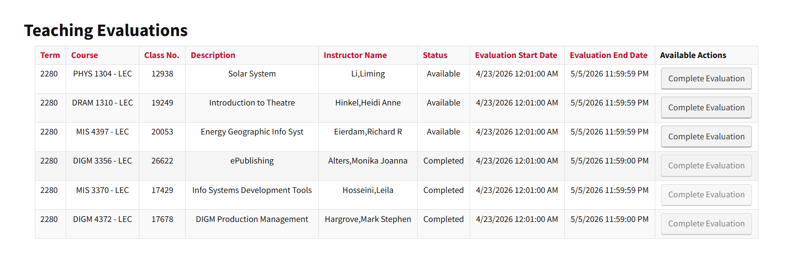

AdaptAI
Merger technology integration case study defining a scalable cloud-based approach across authentication flows, APIs, data models, and legacy records.
Long Story Short
I analyzed merger systems and defined a scalable cloud-based integration approach
For the Merger Technology Integration case, I evaluated authentication flows, APIs, and data models across Lakeside University systems. The work centered on translating messy legacy-system constraints into a defensible integration recommendation.
System Analysis
Mapped authentication flows, APIs, and data models across merged university systems.
Tradeoff Analysis
Compared 3 competing technical solutions across scalability, implementation risk, and usability.
Data Validation
Examined 1,000+ legacy records to validate cloud architecture recommendations.
How might we integrate fragmented legacy systems into a scalable cloud architecture without losing critical data context?
Integration Research
To recommend the strongest path, I tested each option against real system constraints
I analyzed authentication flows, API dependencies, database structures, and legacy records to understand where integration risk would appear. The final recommendation balanced technical scalability with implementation practicality.
Solution
I recommended a cloud integration approach grounded in tradeoff analysis
The final solution defined a scalable integration path across identity access, APIs, and data migration. I used technical comparison and record validation to support the recommendation instead of relying on a purely conceptual architecture.
Impact
3 Solutions
Led tradeoff analysis across competing technical approaches.
1,000+ Records
Validated recommendations against legacy-system data.
2nd Place
Recognized in the Merger Technology Integration competition.
Reflection
What I learned
This project strengthened my ability to evaluate technology decisions across business, technical, and user constraints. It also gave me practice communicating tradeoffs clearly under competition timelines.